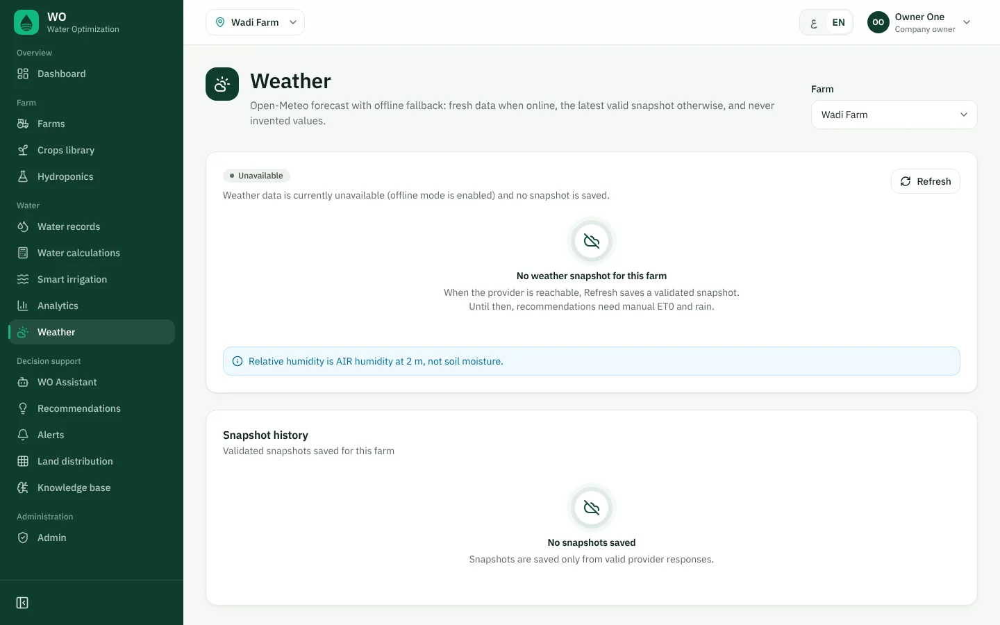
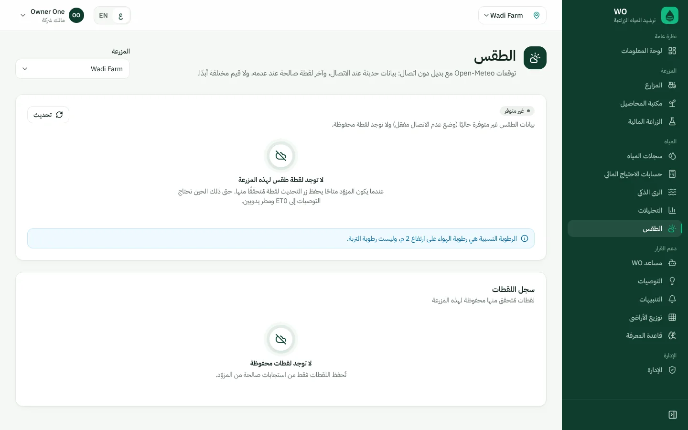
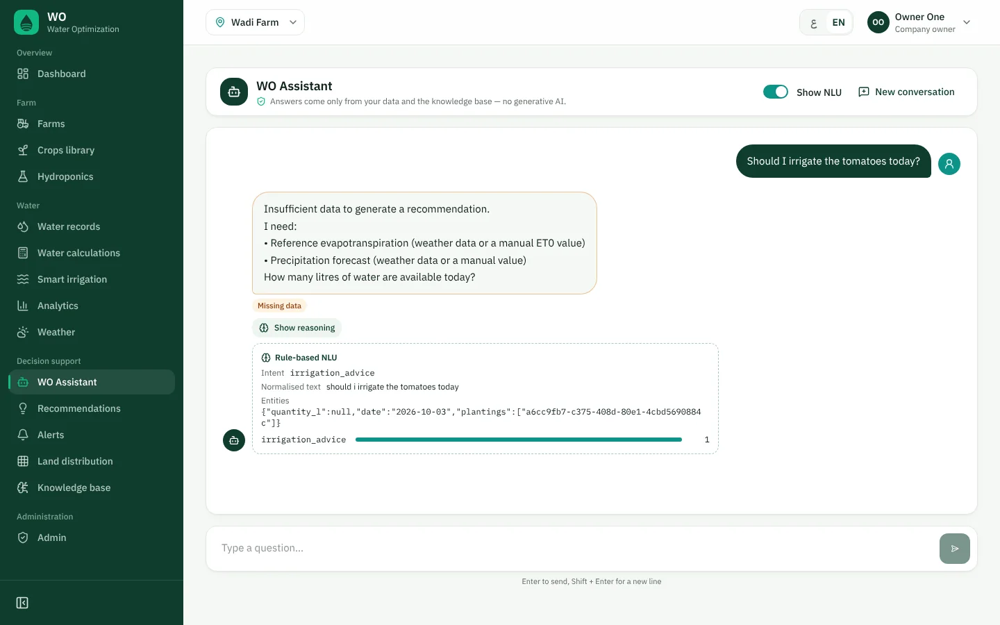
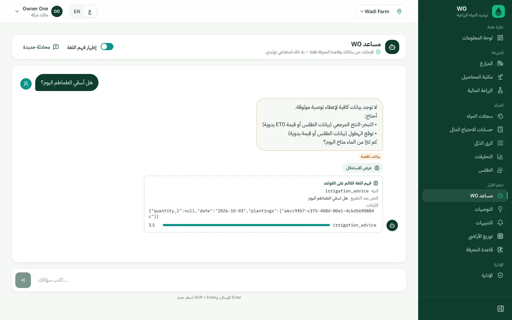
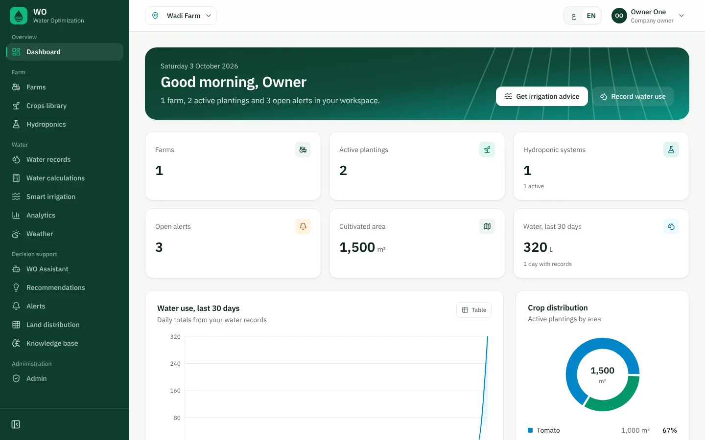
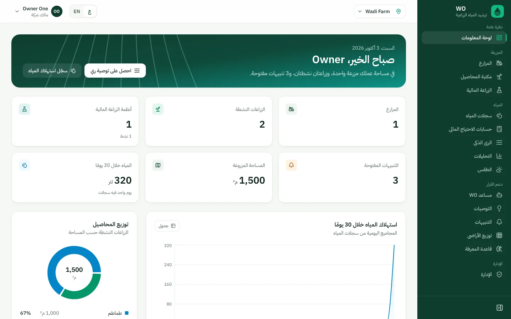
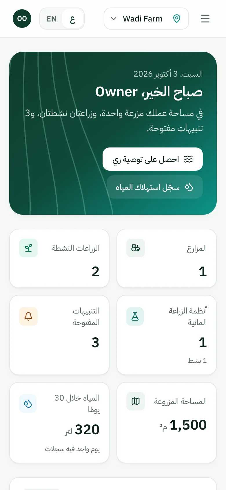

Smart Water Management for Agriculture: a knowledge-based decision support system for irrigation, hydroponics and land planning.إدارة ذكية لمياه الزراعة: نظام دعم قرار قائم على المعرفة للري والزراعة المائية وتخطيط الأراضي.
Agriculture accounted for 71 per cent of total freshwater withdrawals globally in 2022.شكّلت الزراعة 71 في المئة من إجمالي سحب المياه العذبة عالميًا في عام 2022.
of global cultivated land was equipped for irrigation (2022), up from 21.5 per cent in 2015.من الأراضي المزروعة عالميًا كانت مجهزة للري (2022)، ارتفاعًا من 21.5 في المئة في 2015.
global renewable freshwater resources per capita, a 7 per cent decline since 2015.موارد المياه العذبة المتجددة عالميًا للفرد، بانخفاض 7 في المئة منذ 2015.
global water stress in 2022; 733 million+ people live in countries with high or critical water stress.الإجهاد المائي العالمي في 2022؛ ويعيش أكثر من 733 مليون شخص في بلدان ذات إجهاد مائي مرتفع أو حرج.
agriculture's water-use efficiency (least efficient sector), improved 38 per cent 2015–2022.كفاءة استخدام المياه في الزراعة (القطاع الأقل كفاءة)، وتحسنت بنسبة 38 في المئة بين 2015 و2022.
Source for all figures: FAO AQUASTAT Water Data Snapshot 2025 — FAO newsroom, مصدر جميع الأرقام: منظمة الأغذية والزراعة، لقطة بيانات المياه AQUASTAT 2025 — غرفة أخبار الفاو، fao.org/newsroom/detail/renewable-water-availability-per-person-plunges-7-percent-in-a-decade-as-global-scarcity-deepens--fao-data-shows/en
Crops and planting dates, water use, hydroponic readings, a validated forecast.المحاصيل وتواريخ الزراعة، واستهلاك المياه، وقراءات الزراعة المائية، وتوقعات طقس مُتحقَّق منها.
FAO-56 requirement, then percepts such as water_limited: true, false or unknown.حساب الاحتياج وفق FAO-56، ثم مدركات مثل water_limited: صحيح أو خطأ أو غير معروف.
Horn rules, axioms and parameters stored in the database and editable by an admin.قواعد هورن ومسلّمات ومعاملات محفوظة في قاعدة البيانات ويعدّلها المشرف.
Events run forward chaining; questions run backward chaining and find missing data.الأحداث تشغّل التسلسل الأمامي، والأسئلة تشغّل التسلسل الخلفي وتكتشف البيانات الناقصة.
Facts used, rules fired, why not the alternatives, what could change it.الحقائق المستخدمة، والقواعد المفعّلة، ولماذا لا البدائل، وما الذي قد يغيّر القرار.
Deterministic logic from the course textbook; the chatbot is pattern-based.منطق حتمي من كتاب المقرر؛ والمساعد يعتمد على الأنماط.
The workspace starts empty; only the knowledge base is pre-loaded, with sources.مساحة العمل تبدأ فارغة؛ قاعدة المعرفة وحدها محمّلة مسبقًا مع مصادرها.
Missing input means "Insufficient data", with the list of what is needed.نقص المدخلات يعني «لا توجد بيانات كافية» مع قائمة بما هو مطلوب.
FAO-56 single crop coefficient per planting, with every step stored and shown.معامل المحصول المفرد وفق FAO-56 لكل زراعة، مع حفظ كل خطوة وعرضها.
A knowledge-based agent decides; every decision cites facts, rules and alternatives.وكيل قائم على المعرفة يقرّر، وكل قرار يستشهد بالحقائق والقواعد والبدائل.
Measured water balance and per-system pH/EC ranges, never soil equations.ميزان مائي مقاس ونطاقات pH/EC لكل نظام، وليس معادلات التربة.
Saved weather snapshots or manual ET0; "unavailable" instead of guessed values.لقطات طقس محفوظة أو ET0 يدوي؛ «غير متوفر» بدل قيم مخمّنة.
A* land distribution with an admissible heuristic; irrigation slots by backtracking.توزيع الأرض بخوارزمية A* مع دالة استدلالية مقبولة؛ وجدولة الري بالتراجع.
Calculated, actual, apparent and measured water kept apart; no assumed savings.فصل الاحتياج المحسوب والاستهلاك الفعلي والوفر الظاهري والوفر المقاس؛ دون افتراض وفر.
REST API operations (FastAPI, OpenAPI)عملية في واجهة REST البرمجية (FastAPI وOpenAPI)
PostgreSQL tables, Alembic migrationsجدولًا في PostgreSQL مع ترحيلات Alembic
React pages in Arabic and English (RTL)صفحة React بالعربية والإنجليزية (مع RTL)
roles with backend-enforced permissionsأدوار بصلاحيات تفرضها الواجهة الخلفية
Perception, rules, forward/backward chaining, explanations, KB validation, Logic Labالإدراك والقواعد والتسلسل الأمامي والخلفي والشرح والتحقق من قاعدة المعرفة ومختبر المنطق
32 FAO-56 reference crops32 محصولًا مرجعيًا من FAO-56
Totals, trends, anomalies, impactالإجماليات والاتجاهات والحالات الشاذة والأثر
Explained recommendation, CSP scheduleتوصية مشروحة وجدولة بتحقيق القيود
Water balance, pH/EC, rulesالميزان المائي وpH/EC والقواعد
Open-Meteo with offline fallbackOpen-Meteo مع بديل دون اتصال
Deterministic Arabic/English chatbotمحادثة حتمية بالعربية والإنجليزية
A* with BFS/UCS/Greedy comparisonA* مع مقارنة BFS وUCS والجشع
Rule-based, deduplicated, with evidenceمبنية على القواعد، دون تكرار، مع الدليل
Parse the request, call one service, return a schema.تقرأ الطلب وتستدعي خدمة واحدة وتعيد مخططًا.
Load data, enforce roles and isolation, persist results and audit entries.تحمّل البيانات وتفرض الأدوار والعزل وتحفظ النتائج وسجلات التدقيق.
Plain functions: no database, no network — easy to test and demonstrate.دوال بسيطة دون قاعدة بيانات أو شبكة — سهلة الاختبار والعرض.
Optional forecast source. The only outbound call.مصدر توقعات اختياري، وهو الاتصال الخارجي الوحيد.
Worked example computed by WO's code with illustrative inputs: tomato, 44 days after planting, 500 m², drip, ET0 6.2 mm, rain 2 mm, RHmin 30 %, wind 3 m/s.مثال محسوب بكود WO بمدخلات توضيحية: طماطم بعد 44 يومًا من الزراعة، 500 م²، ري بالتنقيط، ET0 = 6.2 مم، مطر 2 مم، رطوبة دنيا 30٪، رياح 3 م/ث.
Default application efficiencies from FAO Irrigation Water Management Training Manual No. 4 (methodology, not WO results). Method: FAO-56, Allen et al. (1998), Tables 11–12; every coefficient in the knowledge base carries its source.كفاءات الري الافتراضية من دليل الفاو التدريبي رقم 4 لإدارة مياه الري (منهجية وليست نتائج WO). الطريقة: FAO-56، ألن وآخرون (1998)، الجدولان 11 و12؛ ولكل معامل في قاعدة المعرفة مصدره.
Recirculation 300 / (300 + 10) = 96.8 %نسبة إعادة التدوير: 96.8٪
0.6 L per plant per day (200 plants)0.6 لتر لكل نبتة يوميًا (200 نبتة)
6.0 L per m² per day (20 m²)6.0 لتر لكل م² يوميًا (20 م²)
Illustrative record, computed with hydro_balance.compute_balanceسجل توضيحي محسوب بالدالة hydro_balance.compute_balance
Unaccounted water is computed only when consumed, discharged and both reservoir levels are recorded.يُحسب الماء غير المحسوب فقط عند تسجيل المستهلك والمصرّف ومستويي الخزان.
pH 7.2 above a configured 6.5 fires R-HYD-002 and advice R-HYD-010. No range configured: no alert, "range not configured".pH = 7.2 فوق حد 6.5 المحدد يفعّل R-HYD-002 والنصيحة R-HYD-010. دون نطاق محدد: لا تنبيه، و«النطاق غير محدد».
Lettuce: pH 5.6–6.0, EC 1.15–1.25 mS/cm (Cornell CEA Hydroponic Lettuce Handbook).الخس: pH من 5.6 إلى 6.0 وEC من 1.15 إلى 1.25 ملي سيمنز/سم (دليل كورنيل للخس المائي).
NFT · DWC · Ebb & flow · Drip · Wick · Aeroponics · Raft · Substrate
Open-Meteo daily ET0, rain, temperature, wind; ranges and array lengths checked; extended set retried as core on HTTP 400.ET0 اليومي والمطر والحرارة والرياح من Open-Meteo؛ مع فحص النطاقات وأطوال المصفوفات، وإعادة المحاولة بالمجموعة الأساسية عند الخطأ 400.
Used when offline; flagged stale after 12 h (a policy value in the knowledge base).تُستخدم دون اتصال، وتُعلَّم قديمة بعد 12 ساعة (قيمة سياسة في قاعدة المعرفة).
The agent reports ET0 and rain as missing; the user can enter them manually (data quality: manual ET0).يبلّغ الوكيل أن ET0 والمطر ناقصان، ويمكن للمستخدم إدخالهما يدويًا (جودة البيانات: ET0 يدوي).


The real weather page with offline mode on and no snapshot: it says so, and asks for manual ET0 and rain.صفحة الطقس الحقيقية مع وضع عدم الاتصال ودون لقطة محفوظة: تقول ذلك صراحة، وتطلب إدخال ET0 والمطر يدويًا.
Horn rulesقاعدة هورن
perceptsمُدرَكًا
parametersمعاملًا
axiomsمسلّمات
~x holds only when x is known false, so rules stay Horn clauses and chaining stays sound and complete.~x يتحقق فقط إذا عُرف أن x خاطئ، فتبقى القواعد عبارات هورن ويبقى التسلسل سليمًا وكاملًا.
Clark completion + DPLL: consistency, integrity, dead rules, conflicts, coverage. Shipped KB: 60 SAT checks, no conflict.إكمال كلارك مع DPLL: الاتساق وقيود السلامة والقواعد الميتة والتعارضات والتغطية. قاعدة المعرفة الحالية: 60 فحص إشباع دون أي تعارض.
Forward and backward chaining, TT-ENTAILS, DPLL and resolution on the same query.التسلسل الأمامي والخلفي وTT-ENTAILS وDPLL والاستنتاج بالتحليل على الاستعلام نفسه.


Real screen: weather was offline, so the agent answered "Insufficient data" and asked for ET0, rain and available water.شاشة حقيقية: الطقس كان غير متصل، فأجاب الوكيل «لا توجد بيانات كافية» وطلب ET0 والمطر والماء المتاح.
Strip tashkeel and tatweel, unify alef, taa marbuta, yaa; Arabic digits to 0–9.حذف التشكيل والتطويل وتوحيد الألف والتاء المربوطة والياء وتحويل الأرقام.
10 intents, weighted Arabic and English patterns, threshold and tie rules.10 نوايا بأنماط عربية وإنجليزية موزونة مع حد أدنى وقواعد للتعادل.
Your crops and aliases, dates such as اليوم and بكرة, litres and m³.محاصيلك وأسماؤها البديلة، والتواريخ (اليوم، بكرة)، واللترات والأمتار المكعبة.
Two tomato plantings: "Which planting?" Weather offline: "Send ET0 and rain." No water figure: "How many litres?"زراعتا طماطم: «أي زراعة تقصد؟» وطقس غير متصل: «أرسل التبخر والمطر». ولا كمية ماء: «كم لترًا متاح؟»
Same rules and explanation as the irrigation page. No LLM.القواعد والشرح نفسها كما في صفحة الري، دون نموذج لغوي.
Water is the binding constraint: 4,491,285 of 4,500,000 L used; tomato is at its maximum area.الماء هو القيد الحاكم: استُخدم 4,491,285 من 4,500,000 لتر، والطماطم عند حدها الأقصى من المساحة.
| Algorithmالخوارزمية | Production (kg)الإنتاج (كغ) | Nodes expandedالعقد الموسّعة | Max frontierأقصى حدود | Guaranteeالضمان |
|---|---|---|---|---|
| A* | 32,000 | 7 | 29 | optimalأمثل |
| Uniform-costالتكلفة المنتظمة | 32,000 | 271 | 911 | optimalأمثل |
| Greedy best-firstالأفضل أولًا الجشع | 30,000 | 4 | 10 | noneلا يوجد |
| Breadth-firstالعرض أولًا | 6,000 | 55 | 217 | noneلا يوجد |
Heuristic h = remaining units × p_max − fractional-knapsack upper bound (land- and water-relaxed). It never overestimates, so A* is optimal for the selected objective.الدالة الاستدلالية h = الوحدات المتبقية × p_max − الحد الأعلى لحقيبة الظهر الكسرية (بإرخاء قيدي الأرض والماء). لا تبالغ أبدًا في التقدير، لذا A* أمثل للهدف المختار.
Example instance computed with WO's search code: 10,000 m² in 20 units, 4.5 million L for the season, FAO-56 seasonal water (ET0 5.5 mm/day, drip 0.90), illustrative yields entered as user inputs. Result statement: "Optimal under the selected objective and constraints."مثال محسوب بكود البحث في WO: 10,000 م² في 20 وحدة، و4.5 مليون لتر للموسم، واحتياج موسمي وفق FAO-56 (ET0 = 5.5 مم/يوم، تنقيط 0.90)، وإنتاجيات توضيحية مُدخلة كمدخلات مستخدم. عبارة النتيجة: «أمثل وفق الهدف والقيود المختارة».



Counts, last-30-day water, crop areas, alerts, weather age.الأعداد ومياه آخر 30 يومًا ومساحات المحاصيل والتنبيهات وعمر بيانات الطقس.
Trends appear after 7 days with records.تظهر الاتجاهات بعد 7 أيام من السجلات.
Full RTL on desktop and phone.اتجاه كامل من اليمين لليسار على الحاسوب والهاتف.
WO does not claim to save water. Savings are computed only from a measured baseline that the farm records itself.لا يدّعي WO أنه يوفّر الماء. يُحسب الوفر فقط من خط أساس مقاس تسجله المزرعة بنفسها.
What the crop needed by FAO-56 on the recorded days.ما احتاجه المحصول وفق FAO-56 في الأيام المسجلة.
What the water records say was applied.ما تقول سجلات المياه إنه استُخدم.
May reflect under-irrigation or unrecorded use. Not proof of savings.قد يعكس ريًا ناقصًا أو استهلاكًا غير مسجل. ليس دليلًا على الوفر.
Only with a recorded baseline and at least 7 days of records. Otherwise: "Not available — record a baseline."فقط مع خط أساس مسجل و7 أيام سجلات على الأقل. وإلا: «غير متوفر — سجّل خط أساس».
Implemented in water_service.impact (GET /api/water/impact). Weather and crop-stage differences between periods are not normalised, and the report says so.مُنفّذ في water_service.impact (GET /api/water/impact). لا تُعدَّل فروق الطقس ومراحل المحصول بين الفترتين، والتقرير يذكر ذلك.
| Permissionالصلاحية | Individualفرد | Company ownerمالك شركة | Farm managerمدير مزرعة | Employeeموظف | Super adminمشرف عام |
|---|---|---|---|---|---|
| Read farm dataقراءة بيانات المزرعة | ✓ | ✓ | ✓ | ✓ | ✓ |
| Add records, run AIإضافة سجلات وتشغيل الذكاء | ✓ | ✓ | ✓ | ✓ | ✓ |
| Edit farms and plantingsتعديل المزارع والزراعات | ✓ | ✓ | ✓ | — | ✓ |
| Delete recordsحذف السجلات | ✓ | ✓ | ✓ | — | ✓ |
| Delete farmsحذف المزارع | ✓ | ✓ | — | — | ✓ |
| Assign members, manage usersتعيين الأعضاء وإدارة المستخدمين | — | ✓ | — | — | ✓ |
| Edit the knowledge baseتعديل قاعدة المعرفة | — | — | — | — | ✓ |
From services/access.py and the role checks in the services.من services/access.py وفحوص الأدوار في الخدمات.
Not 403, so existence is never leaked.وليس 403، حتى لا يُكشف وجودها.
HS256, 2 h expiry; logout bumps token_version.HS256 بصلاحية ساعتين؛ وتسجيل الخروج يزيد token_version.
Login limited to 10 attempts per 5 minutes.الدخول محدود بعشر محاولات كل 5 دقائق.
Security headers, CSP, CORS from environment.ترويسات أمان وCSP وCORS من متغيرات البيئة.
Logins, records, recommendations, KB edits; secrets never logged.تسجيلات الدخول والسجلات والتوصيات وتعديلات قاعدة المعرفة؛ دون تسجيل الأسرار.